Oceânica · V05 · Hero
Três direções para o hero. Todas partem da mesma pergunta: a pessoa entende, nos primeiros segundos, que está diante de uma grande operação de engenharia offshore? O mergulhador e o ROV aparecem dentro da operação, nunca no lugar dela.
Estudos de direção de arte, não implementação. Cada quadro é uma composição estática montada em HTML com fotografias reais da Oceânica e renderizada no Chrome. Nenhum movimento existe ainda. Nenhuma imagem foi gerada por IA e nenhum crédito foi gasto. A água abaixo da linha no conceito B e o desenho do conceito C são feitos à mão, e isso está indicado em cada quadro. O site no ar não foi alterado.
Conceito A · A escalaRecomendado
EN · Engineering at the scale of the sea.
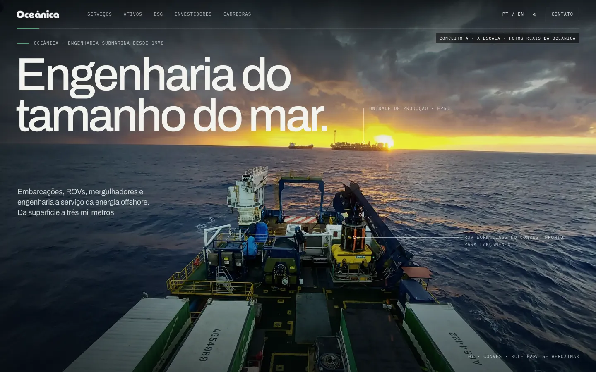
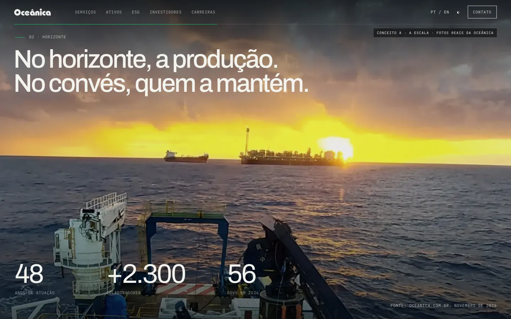
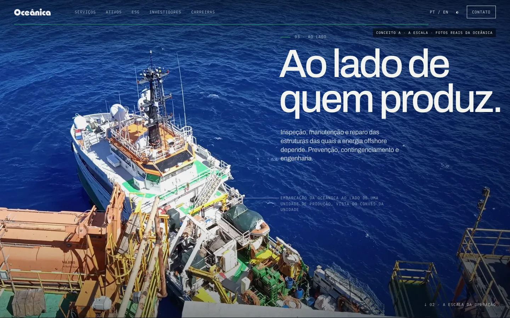
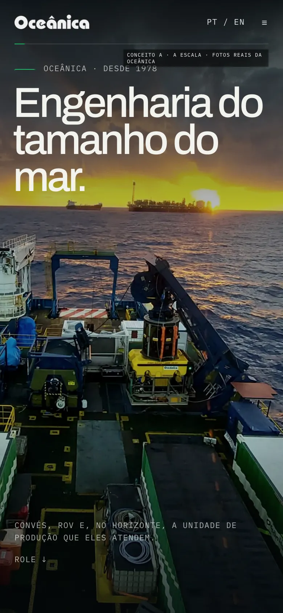
Conceito B · Acima e abaixo
EN · Below the waterline, an entire operation.
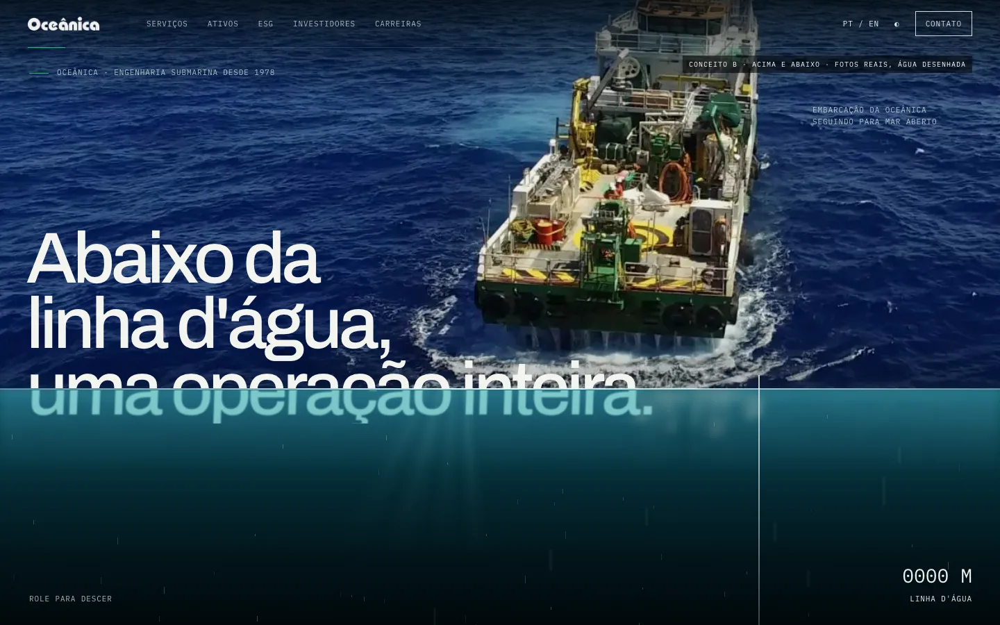
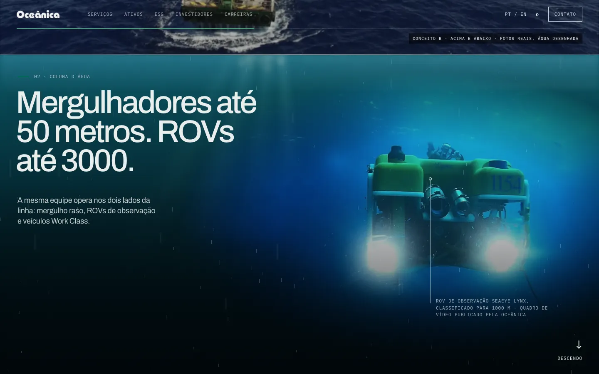
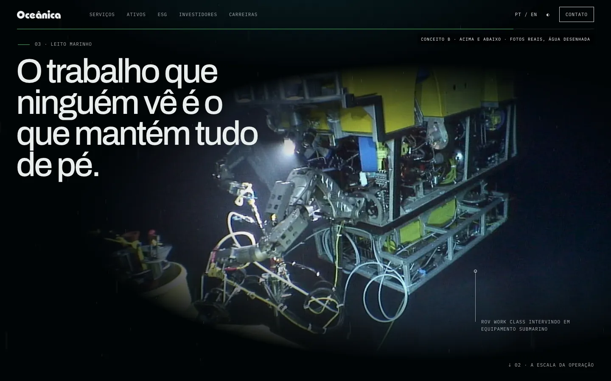
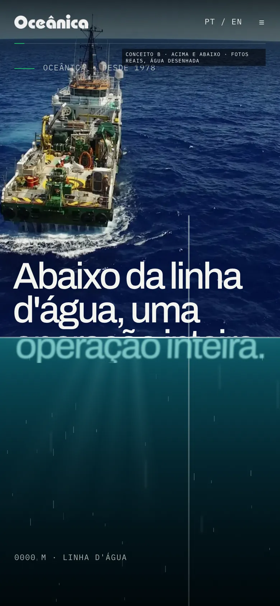
Conceito C · O sistema
EN · Offshore is a system. We look after it.
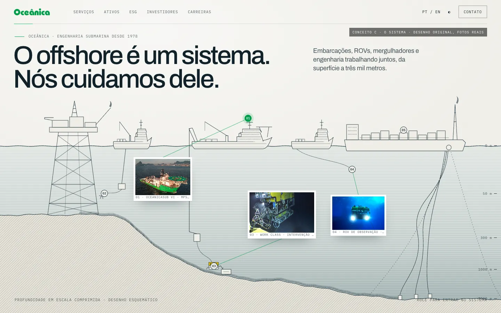
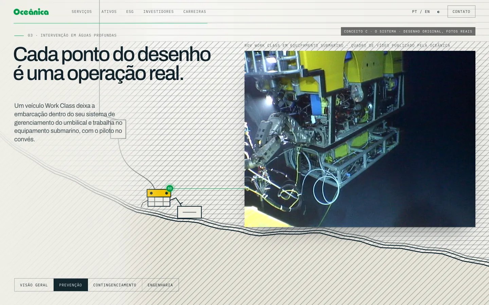
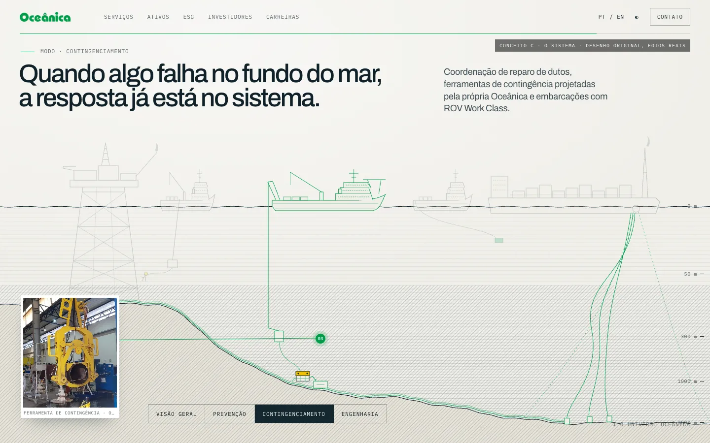
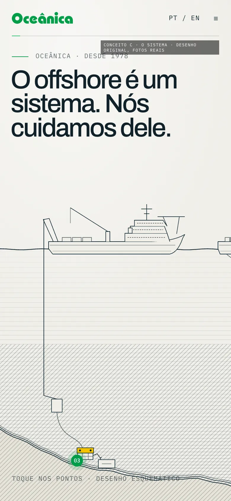
| A · A escala | B · Acima e abaixo | C · O sistema | |
|---|---|---|---|
| Comunica tamanho | Sim, no primeiro segundo | Alcance (0 a 3000 m), menos tamanho | Amplitude: tudo o que a empresa faz |
| Emoção | Poder, confiança | Curiosidade, respeito | Clareza, inteligência |
| Momento-assinatura | O convés sai de foco e o horizonte se aproxima | O título se rasga na linha d'água | O desenho vira fotografia |
| Material de hoje | Fotos reais, boas | Foto real acima; vídeo comprimido abaixo | Desenho original e fotos reais |
| Produção ideal | Voo de drone ao amanhecer até a FPSO | Tomada over/under do lançamento e mergulhador real | Ilustrador com os arranjos gerais das embarcações |
| Peso estimado | 1,1 MB | 0,9 MB | 0,7 MB |
| Risco | Baixo | Médio | Médio (qualidade do desenho) |
| Depende de banco de imagem | Não | Não | Não |
O conceito A é o único em que alguém entende, sem rolar, que está diante de uma grande operação offshore: o convés da Oceânica, o ROV e a unidade de produção do cliente aparecem juntos, em uma foto real. É também o mais diferente do hero que está no ar hoje, que tem o ROV como protagonista.
O conceito C é a ideia mais original e é exatamente o que a seção Universo precisa; usado no hero, faria o site dizer a mesma coisa duas vezes. O título cortado do conceito B é o recurso mais memorável e pode viver, uma única vez, na passagem para os capítulos submarinos.
Oceânica · V05 · estudo interno · fotos do site oficial, sem liberação de direitos · 12 nov 2026